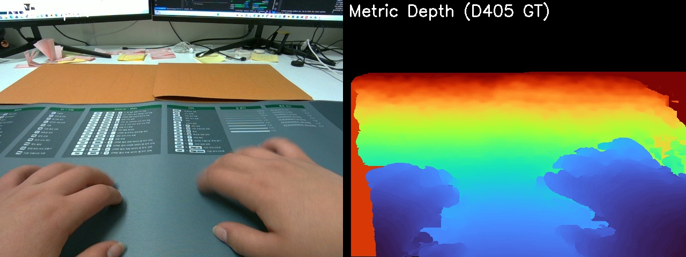
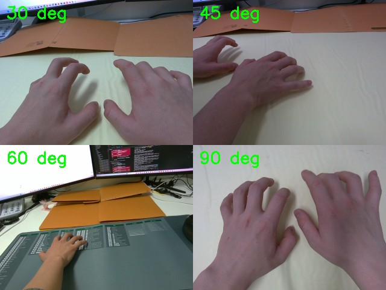
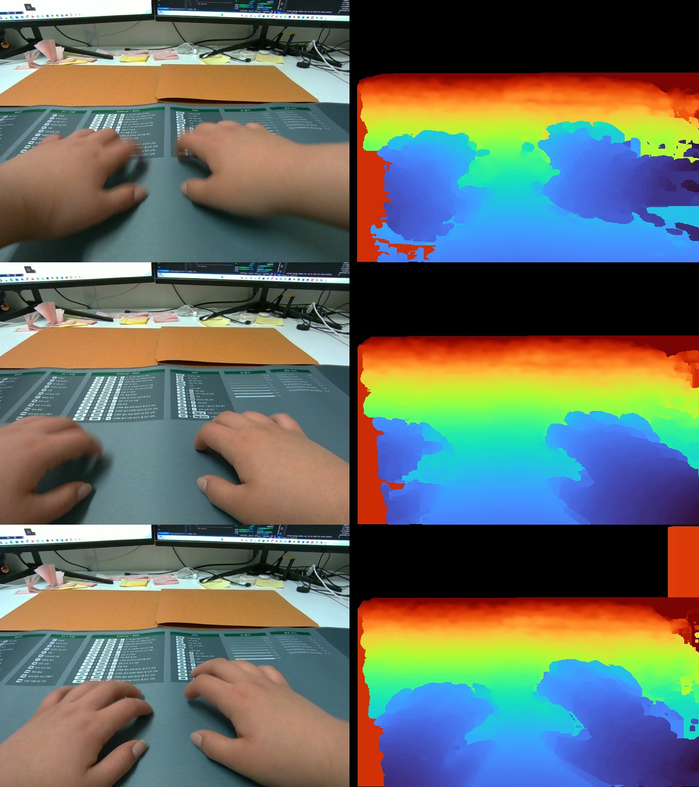
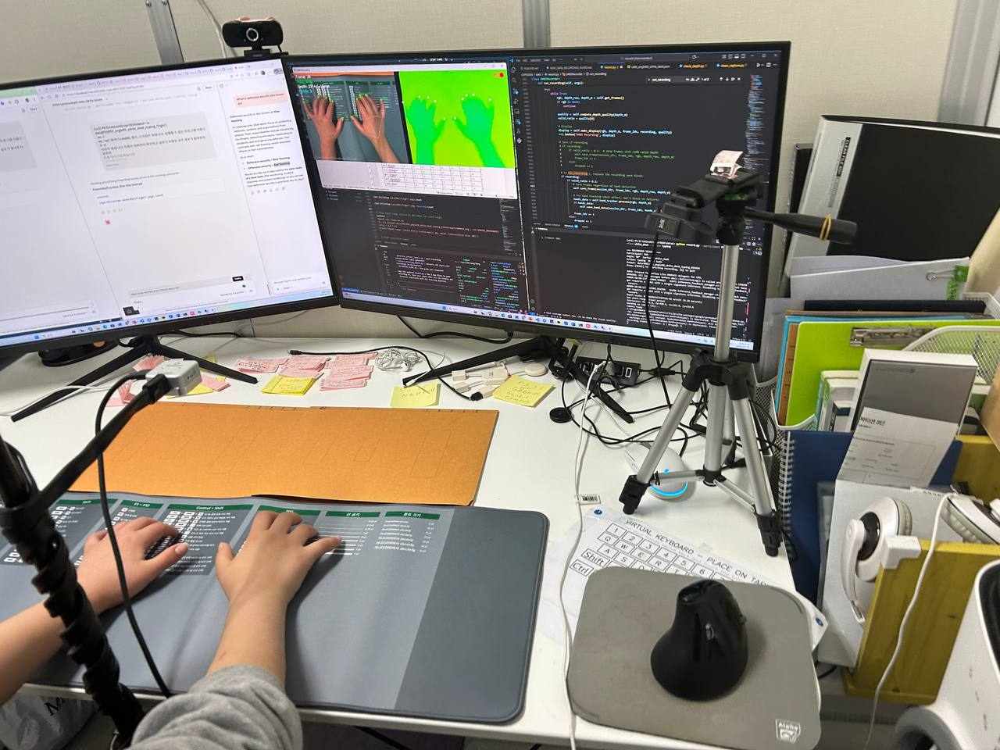

Real-time virtual keyboard demo. Our system tracks all fingertips, estimates metric depth via fine-tuned Depth Anything V2, and detects contact events using a velocity-gated hysteresis state machine — all at 30 FPS.
CVPR 2026
1SpaceTop, SoC, KAIST 2VoiceAI, BMSE, Inha University 3SoCS, Semyung University 4Dep. of CE, Gachon University, South Korea 5Jizzakh branch of the National University of Uzbekistan
Real-time virtual keyboard demo. Our system tracks all fingertips, estimates metric depth via fine-tuned Depth Anything V2, and detects contact events using a velocity-gated hysteresis state machine — all at 30 FPS.
Real-time typing with depth estimation
Fingertip contact detection
Multi-finger virtual keyboard
We present a real-time system for detecting fingertip contact events on flat surfaces using monocular depth estimation and motion analysis. Our approach fine-tunes Depth Anything V2 on a custom close-range dataset captured with an Intel RealSense D405 depth camera, reducing mean absolute depth error by 68%, from 12.3 mm to 3.84 mm in the 25–45 cm operating range. Contact detection employs a velocity-gated hysteresis state machine that fuses depth-based surface distance (4.5 mm entry / 6.0 mm exit thresholds) with fingertip motion velocity cues, achieving 94.2% accuracy and 94.4% F1-score. The system operates at 30 FPS on consumer hardware, enabling practical vision-based virtual keyboard interaction at 45.6 words per minute with 3.1% character error rate. We release a multi-user, multi-angle D405 depth dataset comprising 53,300 RGB-depth pairs from 15 participants at four camera angles, with per-frame hand landmark annotations and contact/hover labels.
System Pipeline. An RGB camera captures the typing scene. Our fine-tuned Depth Anything V2 estimates metric depth, from which fingertip-to-surface distances are computed. A velocity-gated hysteresis state machine fuses depth distance and fingertip motion to detect contact events in real-time.
| Contact entry threshold | 4.5 mm (fingertip-to-surface) |
| Contact exit threshold | 6.0 mm (hysteresis prevents flicker) |
| Cooldown period | 450 ms (~15 frames at 30 FPS) |
| Depth model | DA2-ViTS fine-tuned, max_depth=0.5 m |
| Model | MAE (mm) | δ1 (%) | RMSE (mm) |
|---|---|---|---|
| DA2-ViTS (pre-trained) | 12.3 | 87.2 | 18.4 |
| Ours (fine-tuned) | 3.8 | 95.96 | 4.8 |
| Method | Acc (%) | F1 (%) | FPR (%) |
|---|---|---|---|
| Depth only | 87.3 | 86.1 | 8.7 |
| Velocity only | 89.1 | 88.5 | 6.3 |
| Ours (fusion) | 94.2 | 94.4 | 4.2 |
| WPM | 45.6 |
| CER | 3.1% |
| F1-Score | 94.4% |
| Inference | 30 FPS (RTX 3060 Ti) |

Left: RGB input from Intel RealSense D405. Right: Ground-truth metric depth (TURBO colormap, uint16 millimeters).
| Total frames | 53,300 RGB-depth pairs |
| Participants | 15 users |
| Camera angles | 30°, 45°, 60°, 90° |
| Splits | 42,640 / 5,330 / 5,330 (8:1:1) |
| Depth sensor | Intel RealSense D405 (640×480, 30 FPS) |
| Depth accuracy | <0.5 mm at 35 cm |
| Annotations | 21 hand landmarks + 5 fingertip depths per frame |
| Labels | Per-fingertip contact/hover state |

Data captured at four camera angles: 30° (top-left), 45° (top-right), 60° (bottom-left), 90° overhead (bottom-right).

Three example frames from the dataset. Left: RGB input. Right: Metric depth from D405 (TURBO colormap). Hands at varying poses and distances from the keyboard surface.



Recording setup with Intel RealSense D405 at various camera angles.
Recording demo
Data capture session
Camera setup view
Scan to access project resources
Project Page
GitHub Code
HF Models
HF Dataset
@inproceedings{toshpulatov2026realtime,
title={Real-Time Multimodal Fingertip Contact Detection via Depth and
Motion Fusion for Vision-Based Human-Computer Interaction},
author={Toshpulatov, Mukhiddin and Lee, Wookey and Lee, Suan and Lee, Geehyuk},
booktitle={Proceedings of the IEEE/CVF Conference on Computer Vision
and Pattern Recognition (CVPR)},
year={2026}
}